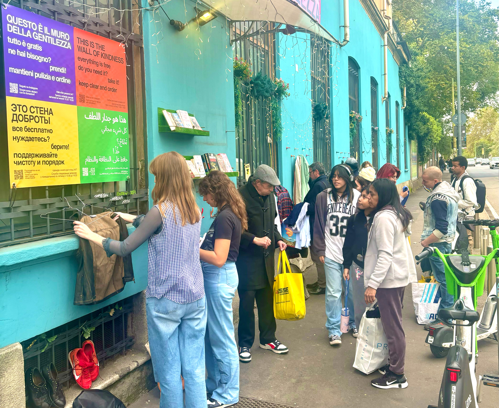

Oggi quando si parla di clubbing, il dibattito si concentra quasi sempre sulle line-up, sui festival o sui numeri delle presenze. Più raramente ci si interroga su quale possa essere il ruolo di un club all'interno della società contemporanea.
È una domanda che considero sempre più centrale, soprattutto in un momento storico in cui le città europee stanno progressivamente perdendo spazi indipendenti, mentre le istituzioni culturali faticano sempre più a coinvolgere le nuove generazioni con linguaggi, modalità organizzative e forme di partecipazione realmente contemporanee.
È da questa riflessione che nasce il mio interesse per il Tempio del Futuro Perduto. Non tanto come luogo dedicato alla musica elettronica, quanto come fenomeno organizzativo e culturale. Al di là dei giudizi estetici o delle preferenze musicali, ritengo che il Tempio rappresenti uno dei casi di studio più significativi emersi negli ultimi anni nel panorama italiano degli spazi culturali indipendenti, perché permette di osservare come una comunità possa trasformare un'ex area industriale in una piattaforma capace di produrre contemporaneamente cultura, partecipazione, formazione, mutualismo e relazioni internazionali.
Questo articolo inaugura una serie di approfondimenti dedicati ai modelli culturali contemporanei che, partendo da esperienze concrete, proveranno a interrogarsi su come stiano cambiando il rapporto tra città, comunità e produzione culturale. Più che celebrare singoli progetti, l'obiettivo è comprenderne il funzionamento, analizzarne i risultati e individuare gli elementi che potrebbero rappresentare un riferimento anche per altre realtà.
La storia
Il Tempio nasce come occupazione culturale nel 2018 all'interno di un'ex officina tranviaria abbandonata della Fabbrica del Vapore di Milano. In meno di un decennio quello spazio è diventato una delle comunità culturali indipendenti più estese del Paese. Secondo i dati, il progetto ha accolto oltre 1,3 milioni di persone, costruito una rete composta da oltre 100.000 soci annui e coinvolto visitatori provenienti da circa 130 Paesi. Considerati singolarmente, questi numeri descrivono il successo di un'organizzazione. Osservati nel loro insieme, suggeriscono qualcosa di più interessante: la capacità di costruire una comunità stabile attorno a un progetto culturale indipendente.
La crescita del Tempio non è avvenuta attraverso un investimento iniziale particolarmente rilevante, ma da una colletta di 350€ serviti per pulire gli spazi al tempo degradati.
«Da una colletta di 350€ per pulire spazi degradati è nata una delle comunità culturali indipendenti più estese del Paese.»

Tempio si è sviluppato in modo progressivo, aggiungendo nel tempo nuove funzioni e nuovi livelli di complessità. Alla programmazione musicale si sono affiancati laboratori, conferenze, produzioni editoriali, percorsi di formazione, una radio permanente, attività dedicate ai giovani artisti, progetti di solidarietà internazionale, iniziative di rigenerazione urbana e programmi di welfare culturale. Il risultato è un'organizzazione che oggi opera quotidianamente e che utilizza la musica come uno dei propri linguaggi, non come l'unico elemento identitario.
Un aspetto particolarmente significativo riguarda il rapporto tra il Tempio e la propria comunità. Nella maggior parte degli spazi dedicati agli eventi esiste una distinzione piuttosto netta tra chi organizza e chi partecipa. Nel corso degli anni il Tempio ha invece sviluppato un modello in cui numerosi frequentatori sono diventati volontari, organizzatori, artisti, tecnici, docenti, comunicatori o responsabili di progetto. La crescita dell'organizzazione è coincisa con la crescita della comunità che la sostiene, producendo un patrimonio di competenze distribuite che costituisce probabilmente una delle sue risorse più importanti.
Anche sotto il profilo quantitativo il progetto presenta caratteristiche difficilmente trascurabili. Ogni anno il Tempio realizza centinaia di eventi, incontri, workshop, dj set, concerti, podcast, registrazioni radiofoniche e attività formative. Parallelamente sviluppa una programmazione continuativa che coinvolge discipline differenti e pubblici eterogenei, mantenendo un'attività distribuita durante tutto l'arco della settimana e non limitata ai soli fine settimana o alla fascia notturna.
Accanto alla produzione culturale si è sviluppata negli anni una significativa attività sociale. Attraverso il Muro della Gentilezza sono state redistribuite oltre 700 tonnellate di beni, contribuendo al sostegno di migliaia di persone e famiglie in condizioni di difficoltà economica. A questa iniziativa si sono aggiunti programmi di inserimento lavorativo, raccolte fondi internazionali, collaborazioni con associazioni del terzo settore, attività ambientali e numerosi progetti dedicati alla costruzione di reti solidali. Si tratta di iniziative che non costituiscono eventi straordinari, ma una componente permanente dell'identità del progetto.

Un altro elemento che merita attenzione riguarda il modello economico sviluppato nel corso degli anni. Tempio è cresciuto senza sponsor commerciali e senza finanziamenti pubblici. La sua evoluzione è stata resa possibile principalmente dalla partecipazione della comunità, dall'autofinanziamento e dalla capacità di reinvestire le risorse prodotte dalle attività culturali nello sviluppo di nuovi progetti. Questo modello ha consentito all'organizzazione di ampliare progressivamente il proprio raggio d'azione mantenendo una significativa autonomia nelle scelte artistiche e progettuali.
"Tempio è cresciuto senza sponsor commerciali e senza finanziamenti pubblici."
L'evoluzione del Tempio ha trovato un passaggio importante anche sul piano istituzionale. Dopo anni di attività il progetto ha ottenuto il riconoscimento attraverso la vittoria di due bandi pubblici del Comune di Milano, consolidando la propria presenza negli spazi della Fabbrica del Vapore. Si tratta di un risultato che testimonia come un'esperienza nata dal basso sia riuscita a trasformarsi in un interlocutore stabile delle istituzioni senza perdere la propria natura indipendente.
Nel frattempo il progetto ha continuato a sviluppare una rete internazionale sempre più estesa. La presenza di pubblico proveniente da circa centocinquanta Paesi, le collaborazioni con artisti, ricercatori, collettivi e operatori culturali stranieri, insieme alla partecipazione a reti europee dedicate alla cultura indipendente, hanno progressivamente collocato il Tempio all'interno di un contesto che supera ampiamente la dimensione cittadina. Milano rappresenta il luogo fisico in cui il progetto opera, ma la comunità che si è costruita attorno ad esso ha ormai una dimensione internazionale.
Il caso del Tempio appare particolarmente rilevante perché concentra, all'interno dello stesso progetto, caratteristiche che raramente convivono con questa intensità all'interno di un'unica organizzazione culturale indipendente.
Conclusioni
In meno di dieci anni un'ex officina tranviaria abbandonata è diventata una comunità di oltre centomila persone, ha accolto più di 1,3 milioni di visitatori provenienti da circa 150 Paesi, ha sviluppato una programmazione multidisciplinare permanente, ha redistribuito oltre 700 tonnellate di beni e 600.000 libri usati attraverso i propri programmi sociali, ha costruito una piattaforma editoriale, una radio, percorsi formativi, attività di ricerca, progetti di rigenerazione urbana e una rete internazionale di artisti e operatori culturali.
Per la combinazione di questi elementi, il Tempio del Futuro Perduto può essere considerato uno dei casi di studio più significativi e originali emersi negli ultimi anni nel panorama culturale italiano. Allargando lo sguardo al contesto internazionale, rappresenta una delle esperienze più articolate nel campo degli spazi culturali indipendenti, non tanto per un singolo primato, quanto per la capacità di integrare, all'interno della stessa organizzazione, produzione artistica, vita comunitaria, innovazione sociale, mutualismo, formazione, rigenerazione urbana e cooperazione internazionale su una scala raramente riscontrabile in un unico progetto.
La storia del Tempio suggerisce infine una riflessione più ampia. Per lungo tempo il successo di un club è stato misurato quasi esclusivamente attraverso il numero di biglietti venduti, la notorietà degli artisti ospitati o la qualità della programmazione musicale. Questo caso milanese mostra come sia possibile osservare questi spazi anche attraverso altri indicatori: la capacità di costruire comunità durature, di generare partecipazione, di produrre cultura in maniera continuativa, di sviluppare relazioni internazionali, di attivare reti di solidarietà e di contribuire alla trasformazione del territorio in cui operano.
È probabilmente questa convergenza di risultati a rendere il Tempio del Futuro Perduto un caso di studio di particolare interesse. Non perché rappresenti un modello da replicare automaticamente in altri contesti, ma perché dimostra come uno spazio nato all'interno della cultura dei club possa evolvere fino a diventare una delle esperienze culturali indipendenti più significative, complesse e originali sviluppatesi negli ultimi anni in Italia, in Europa e, per l'insieme delle caratteristiche che riesce a concentrare, anche nel panorama internazionale degli spazi culturali contemporanei.